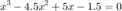
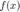

MATLAB
Contents
Session 1
8+3*5 %23 8+(3*5) (8+3)*5 3*4^2-5 (3*4)^2-5 %Question 4 %a 6*(10/13)+18/(5*7)+5*(9^2) %b 6*(35^(1/4))+14^(-0.35) %Question 5 %imaginary numbers (-5+9i)+(6-2i) x=-5+9i y=6-2j z=x+y a=x-y b=x*y c=x/y %Question 6 %Complex numbers and trig mag=abs(x) phase=angle(x) phased=phase*180/pi tan(phase) tand(phased) %NOTE: e is not a predefined constant like i,j,pi. e=exp(1) exp(i*pi/6) cos(pi/6) sin(pi/6) %Question 7 %Matrices X=[1 2 3] %matrix on one row X=[ 1; 2; 3] %matrix in one column X=X' %switch from column to row Y=[ 3 3 3] Z1=X+Y %Z2=X*Y %multiplication of matrices Z3=X.*Y %dot product of matrices %solve the matrix % x+3x2+2x3=1 % 2x1+2x2+4x3=2 % 4x1+x2+5x3=5 % Ax=b A=[ 1 3 2 ; 2 2 4 ; 4 1 5 ] B=[ 1 2 5 ] C=A / B
ans =
23
ans =
23
ans =
55
ans =
43
ans =
139
ans =
410.1297
ans =
14.9909
ans =
1.0000 + 7.0000i
x =
-5.0000 + 9.0000i
y =
6.0000 - 2.0000i
z =
1.0000 + 7.0000i
a =
-11.0000 +11.0000i
b =
-12.0000 +64.0000i
c =
-1.2000 + 1.1000i
mag =
10.2956
phase =
2.0779
phased =
119.0546
ans =
-1.8000
ans =
-1.8000
e =
2.7183
ans =
0.8660 + 0.5000i
ans =
0.8660
ans =
0.5000
X =
1 2 3
X =
1
2
3
X =
1 2 3
Y =
3 3 3
Z1 =
4 5 6
Z3 =
3 6 9
A =
1 3 2
2 2 4
4 1 5
B =
1 2 5
C =
0.5667
0.8667
1.0333
Session 2
Question 3
Multiple plots, maxima, minima and comparators: For t = 0 to 8 and each each signal s1 = 5sint, s2 = 2?t and s3 = 0.4?(1.8t)
a) Plot the 3 signals on the same time axes, use: figure, hold, plot(t, s# , ?colour letter? ) and/or plot(t,[s1; s2; s3])
t = 0: .01 : 8; % t=linspace(0,8,1000) y1 = 5*sin(t); y2=sqrt(t); %y2=t^0.5; y3=0.4*(1.8*t).^0.5; %y3=0.4*sqrt(1.8*t); figure plot(t,y1); hold on; plot(t,y2); plot(t,y3) figure plot(t,[y1;y2;y3]) % min max straightforward hold on plot(t,[y1;y2;y3]>2)% binary output 0 false, 1 true plot(t,[y1;y2;y3].*([t;t;t]>=2))%turn on at t>=2;


b) >>max(s#) , min(s#) % Confirm the maximum and minimum values
c) >>plot(t , s#>=2) and explain the output
d) >>plot(t , s#.*(t>=2)) and explain the output
Question 4
The roots of a polynomial f(x) are the values of x, such that f(x) = 0. Obtain the roots of the following polynomials:
a) 
F1=[1 -4.5 5 -1.5];
root=roots(F1) %3 real roots (0.5, 1, 3)
root =
3.0000
1.0000
0.5000
b)
F2=[1 -7 40 -34];
root=roots(F2) %2 complex roots (1, 3+- 5i)
root = 3.0000 + 5.0000i 3.0000 - 5.0000i 1.0000 + 0.0000i
Question 5
Plot the above polynomials to confirm if the roots were located correctly by
a) calculating  using array operators for x=[-10:0.2:10]; then plot(x,f)
x= -10:.2:10 ; f1=x.^3 - 4.5*x.^2 + 5*x -1.5; f2=x.^3 - 7*x.^2 + 40*x -34;
b) using polyval(), e.g. plot(x,polyval([1 -4.5 5 -1.5], x))
figure plot(x,[f1 ; f2]) figure plot(x,[polyval(F1,x);polyval(F2,x)]) F=[3 2 -100 2 -7 90]; root=roots(F) x=linspace(-6,6,1000); plot(x,polyval(F,x));
root = -6.1423 + 0.0000i 5.4298 + 0.0000i 0.9630 + 0.0000i -0.4586 + 0.8507i -0.4586 - 0.8507i